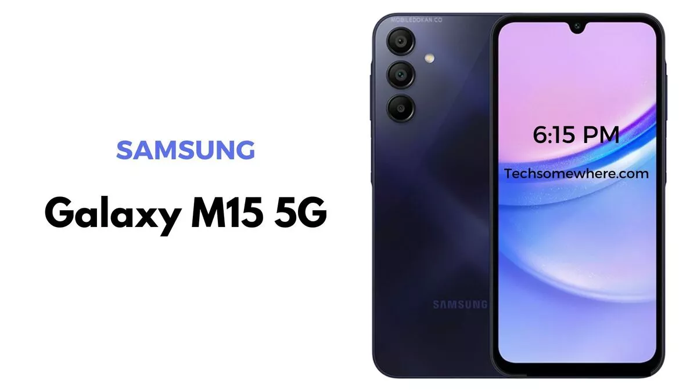
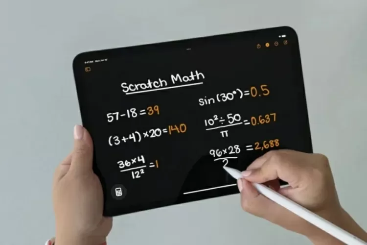

Galaxy M15 5G é bom? Veja preço e ficha técnica do celular da Samsung
Celular intermediário da Samsung chega com especificações atrativas, como bateria robusta de 6.000 mAh, câmera principal de 50 MP e suporte à conexão 5G; confira
Postado 9 de Junho de 2024 
O Samsung Galaxy M15 5G foi lançado em março de 2024 e chegou ao mercado brasileiro com preço
sugerido de R$ 1.499. Com venda exclusiva na loja online da fabricante e em marketplaces de
varejistas parceiros, o celular aparece no Mercado Livre com o mesmo valor de lançamento — R$ 1.499.
Em relação a geração anterior (Galaxy M14), as mudanças aparecem no desempenho (a marca abandonou o
octa-core de fabricação própria e escalou o Dimensity 6100+, da MediaTek), no painel, com tecnologia
Super AMOLED e no sistema fotográfico, que manteve a câmera principal parruda, mas ganhou uma
ultrawide de 5 MP e um sensor macro de 2 MP.
Depois de 14 anos, iPad ganha calculadora e faz muito mais que conta
Postado 06 de Junho de 2024 
Entre os anúncios da Apple na WWDC 2024 (Worldwide Developers Conference), conferência anual de
desenvolvedores da empresa que começou ontem (10), está a nova atualização do sistema operacional do
tablet da marca.
O iPadOS 18, previsto para ser liberado a partir de setembro, chegará com um recurso aguardado desde
o lançamento do primeiro iPad, em 2010: o aplicativo Calculadora.
Ela será ainda mais poderosa que a dos iPhones, incluindo a possibilidade de fazer cálculos à mão. E
uma nova função com IA será capaz de resolver exercícios de física e matemática.
Como vai funcionar
Da mesma maneira que já acontece nos iPhones. Com o iPad na vertical, abre a calculadora básica; na horizontal, a científica completona.E para quem tiver o lápis inteligente Apple Pencil, basta escrever a conta que o app resolve.
Duas novidades são as funções histórico (para voltar para cálculos anteriores) e conversor de unidade.
Math Notes
Além da calculadora, o iPad vai ganhar outro recurso de matemática muito interessante, que usa inteligência artificial: o Math Notes.Ele funciona dentro de aplicativo de Notas, onde será possível escrever qualquer expressão matemática e até desenhar ilustrações, usando uma Apple Pencil Pro, que o problema é resolvido.
O resultado aparece assim que você colocar um sinal de igual. E se precisar ajustar algo na equação depois, o resultado muda diante de seus olhos.
É como um caderno ou lousa inteligente, que funciona como assistente para exercícios de matemática e de física, mesmo os mais complexos. E, como funciona exatamente como uma nota, o exercício fica salvo para você voltar lá a qualquer momento.
Leia mais
Postagens Recentes
Elden Ring: Shadow of the Erdtree deve ter entre 30 a 40 horas de conteúdo inédito
No X, usuário fez um compilado sobre as informações já divulgadas sobre a expansão
Leia maisGTA 6 será lançado em 2025, confirma Rockstar
O aguardado trailer do novo GTA foi revelado em dezembro do ano passado, trazendo um breve olhar para a sequência e muitas novidades instigantes que atiçaram o hype dos fãs.
Leia mais